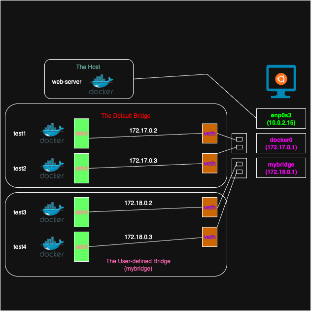

Fri, Oct 3, 2025
I'll dive into how Docker networks work. Docker provides several types of networks. Let's take a look at them one by one.
Vagrant.configure("2") do |config|
config.vm.box = "hashicorp-education/ubuntu-24-04"
config.vm.box_version = "0.1.0"
config.vm.provision "docker"
config.vm.network "forwarded_port", guest: 8080, host: 8081
config.vm.provider "virtualbox" do |vb|
vb.memory = "2048"
vb.cpus = 2
vb.name = 'my_ubuntu'
end
end$ vagrant up
$ vagrant sshCreate a Vagrantfile for Ubuntu with Docker pre-installed and then Connect to the Ubuntu VM.
$ ip addr show
1: lo: <LOOPBACK,UP,LOWER_UP> mtu 65536 qdisc noqueue state UNKNOWN group default qlen 1000
link/loopback 00:00:00:00:00:00 brd 00:00:00:00:00:00
inet 127.0.0.1/8 scope host lo
valid_lft forever preferred_lft forever
inet6 ::1/128 scope host noprefixroute
valid_lft forever preferred_lft forever
2: enp0s3: <BROADCAST,MULTICAST,UP,LOWER_UP> mtu 1500 qdisc fq_codel state UP group default qlen 1000
link/ether 08:00:27:f0:f5:1d brd ff:ff:ff:ff:ff:ff
inet 10.0.2.15/24 metric 100 brd 10.0.2.255 scope global dynamic enp0s3
valid_lft 85558sec preferred_lft 85558sec
inet6 fd17:625c:f037:2:a00:27ff:fef0:f51d/64 scope global dynamic mngtmpaddr noprefixroute
valid_lft 85910sec preferred_lft 13910sec
inet6 fe80::a00:27ff:fef0:f51d/64 scope link
valid_lft forever preferred_lft forever
3: docker0: <NO-CARRIER,BROADCAST,MULTICAST,UP> mtu 1500 qdisc noqueue state DOWN group default
link/ether c6:c2:d8:11:df:79 brd ff:ff:ff:ff:ff:ff
inet 172.17.0.1/16 brd 172.17.255.255 scope global docker0
valid_lft forever preferred_lft foreverlo : This is the network interface that communicates with the local machine itself.enp0s3 : It means network interface on Linux.docker0 : This is a virtual bridge network that is automatically created when Docker is installed.$ docker run -dit --rm --name test1 busybox
$ docker run -dit --rm --name test2 busybox
$ ip addr show
# ...omitted...
4: veth99002d0@if2: <BROADCAST,MULTICAST,UP,LOWER_UP> mtu 1500 qdisc noqueue master docker0 state UP group default
link/ether ee:01:da:8d:31:90 brd ff:ff:ff:ff:ff:ff link-netnsid 0
inet6 fe80::7c18:efff:fe87:6668/64 scope link
valid_lft forever preferred_lft forever
5: veth6b0f063@if2: <BROADCAST,MULTICAST,UP,LOWER_UP> mtu 1500 qdisc noqueue master docker0 state UP group default
link/ether c2:4a:a2:b1:48:5a brd ff:ff:ff:ff:ff:ff link-netnsid 1
inet6 fe80::9400:6fff:fed4:7f76/64 scope link
valid_lft forever preferred_lft forever
$ bridge link
4: veth99002d0@enp0s3: <BROADCAST,MULTICAST,UP,LOWER_UP> mtu 1500 master docker0 state forwarding priority 32 cost 2
5: veth6b0f063@enp0s3: <BROADCAST,MULTICAST,UP,LOWER_UP> mtu 1500 master docker0 state forwarding priority 32 cost 2Two IP addresses are added when it created two containers.
$ docker inspect bridge
# ...omitted...
"Containers": {
"68f1742cce87a868752a6201815d4e7cb6ccb967de398a113a015246afa7d646": {
"Name": "test2",
"EndpointID": "40cd4d3ea06b2baab6b2aac29bd1b83d779f34df8680c7e3bb2eff2ad3b6700d",
"MacAddress": "26:eb:79:91:03:7c",
"IPv4Address": "172.17.0.3/16",
"IPv6Address": ""
},
"f109b15a1c2b0bb1151a832e0fc2ca63b3e6887b7ff6fd80a0d646a343632948": {
"Name": "test1",
"EndpointID": "5a8416c457057fc33c273284edf04c4a926ce057cff29d2f3c44299f759bd9b9",
"MacAddress": "36:fd:74:97:c6:7b",
"IPv4Address": "172.17.0.2/16",
"IPv6Address": ""
}
},
$ docker exec -it test1 sh
# Execute in test3 container
$ ip route
default via 172.17.0.1 dev eth0
172.17.0.0/16 dev eth0 scope link src 172.17.0.2
$ ping 172.17.0.3
PING 172.17.0.3 (172.17.0.3): 56 data bytes
64 bytes from 172.17.0.3: seq=0 ttl=64 time=0.545 ms
64 bytes from 172.17.0.3: seq=1 ttl=64 time=0.241 ms
64 bytes from 172.17.0.3: seq=2 ttl=64 time=0.216 msLet's check the bridge network information, then enter the container and check if it communicates with the other container placed on the same bridge. Boom! Success!
$ docker network create mybridge
$ ip addr show
# ...omitted...
8: br-4aa722b13a46: <NO-CARRIER,BROADCAST,MULTICAST,UP> mtu 1500 qdisc noqueue state DOWN group default
link/ether e6:3a:04:52:f8:54 brd ff:ff:ff:ff:ff:ff
inet 172.18.0.1/16 brd 172.18.255.255 scope global br-4aa722b13a46
valid_lft forever preferred_lft foreverA new IP (172.18.0.1/16) is assigned when a new bridge is created.
$ docker run -dit --rm --network mybridge --name test3 busybox
$ docker run -dit --rm --network mybridge --name test4 busybox
$ ip addr show
# ...omitted...
9: vethf0bbcb0@if2: <BROADCAST,MULTICAST,UP,LOWER_UP> mtu 1500 qdisc noqueue master br-4aa722b13a46 state UP group default
link/ether 0a:fc:9e:0b:eb:17 brd ff:ff:ff:ff:ff:ff link-netnsid 2
inet6 fe80::8fc:9eff:fe0b:eb17/64 scope link
valid_lft forever preferred_lft forever
10: veth979d91f@if2: <BROADCAST,MULTICAST,UP,LOWER_UP> mtu 1500 qdisc noqueue master br-4aa722b13a46 state UP group default
link/ether fa:b9:7a:b6:a7:f8 brd ff:ff:ff:ff:ff:ff link-netnsid 3
inet6 fe80::f8b9:7aff:feb6:a7f8/64 scope link
valid_lft forever preferred_lft forever
$ docker inspect mybridge
# ...omitted...
"Containers": {
"068c64c819926273299ba6470f63c02364779e45f061355f95230ab684d4c3b2": {
"Name": "test4",
"EndpointID": "026f79f2b8d570ebc644ec36413eed5c4027b10b82ffaa28683ee3cfec5b315a",
"MacAddress": "d6:ee:a8:a2:92:12",
"IPv4Address": "172.18.0.3/16",
"IPv6Address": ""
},
"8bbe624dc2cae9dbdce89d96ba94f3223f48476a7f1e386de80213c141f9baa8": {
"Name": "test3",
"EndpointID": "5ab386f1bb9b1da159423313e94b309bca9e65ae41fa95098beda0675df4dd47",
"MacAddress": "02:72:df:f7:b4:30",
"IPv4Address": "172.18.0.2/16",
"IPv6Address": ""
}
},
$ docker exec -it test3 sh
# Execute in test3 container
$ ping 172.18.0.3
PING 172.18.0.3 (172.18.0.3): 56 data bytes
64 bytes from 172.18.0.3: seq=0 ttl=64 time=0.530 ms
64 bytes from 172.18.0.3: seq=1 ttl=64 time=0.136 ms
64 bytes from 172.18.0.3: seq=2 ttl=64 time=0.152 ms
$ ping test4 # 👍👍👍
PING test4 (172.18.0.3): 56 data bytes
64 bytes from 172.18.0.3: seq=0 ttl=64 time=0.150 ms
64 bytes from 172.18.0.3: seq=1 ttl=64 time=0.169 ms
64 bytes from 172.18.0.3: seq=2 ttl=64 time=0.339 msCompared to the default bridge, the advantage of a user-defined bridge is DNS resolution, for example ping test4.
$ docker run -dit --rm --network host --name web-server nginx
$ curl 10.0.2.15
<!DOCTYPE html>
<html>
<head>
<title>Welcome to nginx!</title>
<style>
html { color-scheme: light dark; }
body { width: 35em; margin: 0 auto;
font-family: Tahoma, Verdana, Arial, sans-serif; }
</style>
</head>
<body>
<h1>Welcome to nginx!</h1>
<p>If you see this page, the nginx web server is successfully installed and
working. Further configuration is required.</p>
<p>For online documentation and support please refer to
<a href="http://nginx.org/">nginx.org</a>.<br/>
Commercial support is available at
<a href="http://nginx.com/">nginx.com</a>.</p>
<p><em>Thank you for using nginx.</em></p>
</body>
</html>The host network is one of the basic network types, and the container uses the host's network stack directly. The container shares the host's IP address and ports.
$ docker run -dit --rm --network none --name test5 busybox
$ docker exec -it test5 sh
# Execute in test5 container
$ ip addr show
1: lo: <LOOPBACK,UP,LOWER_UP> mtu 65536 qdisc noqueue qlen 1000
link/loopback 00:00:00:00:00:00 brd 00:00:00:00:00:00
inet 127.0.0.1/8 scope host lo
valid_lft forever preferred_lft forever
inet6 ::1/128 scope host
valid_lft forever preferred_lft foreverThe container connected to the none network has only a loopback interface.

The above shows a visual representation of what I’ve studied so far. Docker recommends using user-defined bridges for better network control and DNS resolution between containers. The main advantage is that they provide isolation from the default bridge.